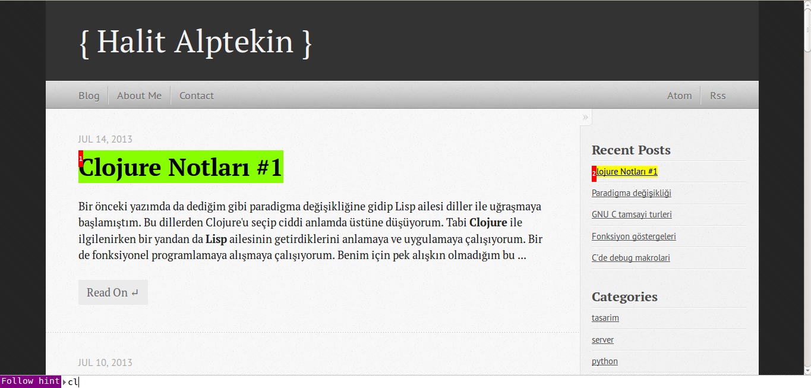

Herhangi bir Lisp dili üzerinde geliştirme yapacaksanız muhtemelen en bu konudaki en büyük adayınız Emacs olur. Çünkü Emacs gerçektende Lisp dilleri için tam bir geliştirme ortamı sunuyor. Hatta kendisi için geliştirilmiş bir Lisp lehçesi bile var. Ayar dosyalarından önemli ayarlara kadar hepsi bu Emacs Lisp adı verilen dil ile yapılıyor. Açıkcası Emacs ile sadece Lisp yazmıyor resmen onu yaşıyorsunuz diyebilirim.
EMACS
Emacs kullanarak Clojure geliştirmek istiyorsanız işinizi çok kolaylaştırcak paketlerden birini seçerek başlayabilirsiniz. Bunlar hem Emacs'e başlangıç için hem de Clojure için gerekli herşeyi size sağlıyorlar. Benim de Emacs'e girişimi yaptığım ve Clojure için özel yapılandırılmış emacslive gördüklerim arasında en güzel başlangıç seti diyebilirim. Hem kurulum kısmıda o kadar basit ki size hiçbirşey bırakmadan herşeyi hallediyor. Siz sadece Emacs girip kodunuzu yazmaya başlıyorsunuz. Kurmak için yapmanız gereken tek şey aşağıdaki komutu çalıştırmak ve kurulumun bitmesini beklemek.
bash <(curl -fksSL https://raw.github.com/overtone/emacs-live/master/installer/install-emacs-live.sh)
Kurulum başarıyla bittikten sonra Emacsinizi açtığınızda aşağıdaki gibi bir şey görmeniz gerekli.

Kurulum ve kurduktan sonraki kurulumlar ile ilgili tüm ayrıntılı bilgileri kendi sitesinden bulabilirsiniz. Zaten çok birşeyi yok. Lein ile oluşturduğunuz projeye nrepl kullanarak bağlanıyorsunuz. Github sayfasındaki videoyu izlerseniz çok rahat bir şekilde çözersiniz.
Tabi bu biraz işin en kolay tarafı oldu. Eğer birazcık daha fazla uğraşmak(üsttekine göre) istiyorsanız daha güzel bir çözüm var. Bu da aynı emacs-live kadar kolay kuruluyor ve gerekli herşeyi size sağlıyor.
Öncelikle bilgisayarımıza emacs24 paketini kurmamız gerekiyor. Debian/Ubuntu kullanıcıları aşağıdaki şekilde kurabilir.
sudo apt-get install emacs24
Yükleme bittikten sonra şimdi sıra Emacs'e gerekli paketleri kurmaya geldi. Öncelikle ~/.emacs.d/init.el dosyasını açıyoruz ve içine aşağıdaki satırları ekliyoruz.
(require 'package)
(add-to-list 'package-archives
'("marmalade" . "http://marmalade-repo.org/packages/"))
(package-initialize)
Eklemeyi yaptıktan hemen sonra Emacs'i açıyoruz ve M-x(genellikle M alt tuşudur) yapıyoruz. Önümüze açılan kısma package-refresh-contents yazıp entere bastığımızda Emacs paketlerimizi otomatik olarak güncelleyecektir. Eğer kurmak istediğiniz bir paket varsa gene M-x kombinasyonundan sonra açılan yere package-install yazıp istediğimiz pakedi kurabiliriz.
Eğer hangi pakedi kuracağınızı otomatikleştirmek isterseniz ~/.emacs.d/init.el dosyanıza aşağıdaki satıları ekleyebilirsiniz.
(defvar my-packages '(starter-kit
starter-kit-lisp
starter-kit-bindings
starter-kit-eshell
clojure-mode
clojure-test-mode
nrepl))
(dolist (p my-packages)
(when (not (package-installed-p p))
(package-install p)))
Emacs açılışta paketleri otomatik olarak kuracaktır. Eğer kurmazsa M-x kombinasyonundan sonra eval-buffer yazarsanız kuruluma başlaması lazım.
Emacs'i ilk defa kullanacağınızı düşünerek aşağıdaki komutları bilmenizde fayda var. En azından en fazla kullandıklarınızı iyice öğrenin derim. Eğer Emacs'i biraz daha iyi öğrenmek isterseniz buradaki Türkçe tutoriali ekleyip bitirebilirsiniz. Başlangıç için gayet iyi. Aşağıdaki kısayollarda kullanılan C(control) M(büyük ihtimal Alt) tuşununun kısaltmasıdır. Bazı yerlerde göreceğiniz RET(return)'de bildiğimiz enter oluyor.
C-x C-f Dosya bul
C-x C-s Buffer'i kaydet
C-x s Dosyayi kaydet(farkli kaydet gibi)
C-x b Bufferlar arasi gecis
C-x k Buffer'i kapat
C-x 1 Diger pencereleri sil
C-x 0 Acik pencereyi sil
C-x 2 Ekrani yatay olarak bolme
C-x 3 Ekrani dikey olarak bolme
C-a Satir basinda git
C-e Satir sonuna git
C-n Bir sonraki satir(asagiya dogru)
C-p Bir onceki sat,r(yukariya dogru)
C-b Geriye git(sol)
C-f Ileriye git(sag)
M-f Kelimeye ilerle
M-b Kelimeye geri gel
C-v Sayfaya ilerle
M-v Sayfaya geri gel
C-d Karakteri yok et
M-d Kelimeyi yok et
C-s Ileriye dogru regex aramasi
C-r Geriye dogru regex aramasi
M-% Degisiklik sorgusu
C-h t Emacs kullanma kilavuzu
C-h b Tus kisayollarinin ac,klanmasi
C-h m Bulunan modun aciklamasi
Emacs'i Clojure ile kullanırken M-x ve nrepl-jack-in yapıp REPL ortamını açabilirsiniz. Daha fazla detay için buradaki link işinizi görecektir.
Light Table
Yiğidi öldür hakkını ver demişler. O yüzden Lisp dili geliştirme ortamı denilince ilk akla gelen Emacs'i önce anlatmak gerekliydi. Bundan sonra Clojure için hafif bir geliştirme ortamı olan Light Table isimli programıda denemenizi öneririm. Gayet hızlı kodlarınızı yazıp anlık olarak değerlendirmelerinizi görebilirsiniz. Bana gayet hoş ve şık geldi. Deneyin birşey kaybetmezsiniz. Bir resim vereyim belki ilginizi çeker.

Vim
Her ne kadar Lisp için geliştirme ortamı tarafsız Emacs olsa da ben tam bir Vim fanatiğiyim. Bu yüzden her işimi orada halletmeyi seviyorum. Firefox'a bile vimperator eklentisini kurarak internette de Vim gibi dolaşıyorum.

Bu yüzden C, C++, Python, Perl, Php, Ruby'den sonra Clojure içinde Vim kullanıyorum. Ve bundan gayette mutluyum. Alışkın olmayanlar için zor gelebilir ama biraz alıştıktan sonra bırakması gerçekten çok zor. Öyle tuşları zor, çok fazla kısayol var gibi düşünmeyin. Tabularınızı yıkıp bir gün deneyin sonra bir daha düşünün.
Vim'de Clojure yazmak için birçok eklenti desteği mevcut. Ama ben kendi kullandığım ve çok memnun olduğum Slimv'den bahsedeceğim. Adındanda anlayacağınız üzere Emacs için olan Slime ortamının Vim ortamıdan kullanılması için yazılmış. Kullanışlılık ve kolaylık açısından gayet memnunum. Henüz bir sıkıntı çekmedim kendisinden.
Öncelikle Slimv eklentisini indirip .vim klasörünüz içinde uygun yere(eklenti yöneticileri kullanıyorsanız içine) atmanız gerekli. Bu işlemden sonra yapmamız gereken tek şey .vimrc dosyamızın içine aşağıdaki satırı eklemek. Bu sayede yazdığımız kodları direkt olarak REPL ile yorumlayabiliriz. Ve gayet hızlı bir şekilde kodlarımızı geliştirebiliriz.
let g:slimv_swank_clojure = '! xterm -e lein swank &'
Burada dikkat çekmem gereken bir nokta var. Yukarıdaki kodu gördüğünüzde kafanızda canlanan birşeyler olmuştur tabi. Eğer dosyanızı editlemek için vimi project.clj dosyasının olduğu dizinden çağırdıysanız herhangi bir sıkıntı olmadan çalışıyor. Ancak eğer farklı bir dizinde iseniz kod başarıyla çalışmıyor ve siz vim'in alt kısmında sürekli bağlanıyor yazısını görüyorsunuz. Bunun çözümü için ya sürekli olarak vimi uygun klasörden çağıracaksınız ya da benim yaptığım gibi statik bir tanımlama yapacaksınız. Daha yaratıcı çözümlerde olabilir ama şimdilik işimi görüyor.
let g:slimv_swank_clojure = '! xterm -e "cd ~/lispCodes/hello/ && lein swank"& '
~/lispCodes/hello dizini altında şartlara uygun kullanmadığım bir lein projesi var. Sürekli olarak oradan REPL'i çağırıyorum. Bende gayet sorunsuz çalışıyor. Hatta lein2 kurduğumdan dolayı REPL ortamımım hepten bozulmuştu. Ama bu hello isimli uygulamayı lein1 ile oluşturduğumdan sıkıntısız kullanıyorum.
Bundan sonra yapmamız gerekenlerden birisi de parantezlerin renklendirilmesi. Bunun yanında Clojure konusunda gayet başarılı bir eklenti olan ClojureVim'i de kurmadan geçmeyelim. Son olarak .vimrc dosyamıza şu satırlarıda ekleyerek işimizi bitirelim.
let g:vimclojure#HighlightBuiltins = 1
let g:vimclojure#ParenRainbow = 1
Bundan sonra Vim'i eğer bir .clj uzantılı dosyayı açması için çağırırsak otomatik olarak Slimv açılacaktır ve komutlar çalışır durumda olacaktır. Gvim kullanıyorsanız yukarıdaki panelde Slimv menüsünden tüm komutları görebilirsiniz. En çok lazım olanları bilmek bana şimdilik yeterli oluyor. İlerde biraz daha fazla kod yazmaya başladığımda Debugger gibi araçlarıda kullanacağım tabi.
,d => Uzerinde bulunan fonksiyonu REPL ortamina aktarir
,e => Uzerinde bulunan ifadeyi REPL ortamina aktarir
,r => Secili bolgeyi REPL ortamina aktarir
,b => Calisilan buffer'i REPL ortamina aktarir
Eğer başarılı bir şekilde yaptıysanız en az Emacs kadar iyi bir ortama sahip oluyorsunuz. Ben şu anda gayet memnunum. Ufak sorunlar tabi başta vardı ama şu anda sorunsuz kullanıyorum. Bir çılgınlık yapıp sizlerinde Vim'i kullanmasını tavsiye ediyorum.

Ek olarak gerçek bir ortama dönüşmesi için omni-complete ve fireplace gibi eklentileri de kurmanız gerekli. Hatta ctrlp ve synastic de kurduğunuzda tadından yenmez. Tabi NerdTree , Powerline , Gundo , Pathogen , Taglist gibi eklentileri söylemiyorum bile. Bunlar olmadan olmaz.
Buradan devam
- http://clojure-doc.org/articles/tutorials/vim_fireplace.html
- http://clojure-doc.org/articles/tutorials/emacs.html
- http://naleid.com/blog/2011/12/19/getting-a-clojure-repl-in-vim-with-vimclojure-nailgun-and-leiningen/
- http://usevim.com/2013/01/02/vimclojure/
- http://ianrumford.github.io/blog/2012/06/22/clojure-emacs-slime-and-swank-on-ubuntu-precise-1204/
- http://www.emacswiki.org/emacs/ClojureMode
- http://www.unexpected-vortices.com/clojure/10-minute-emacs-for-clojure.html